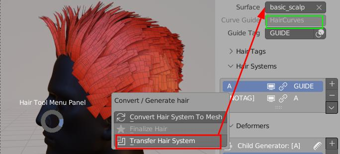
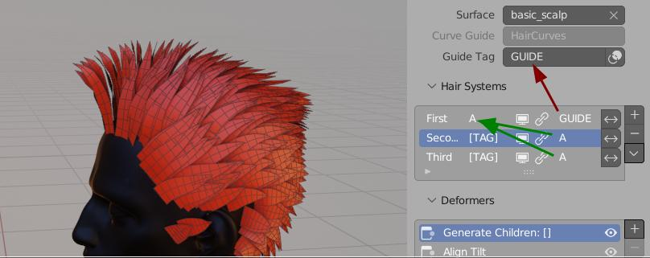
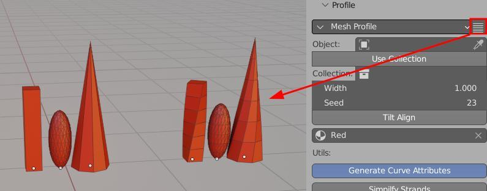
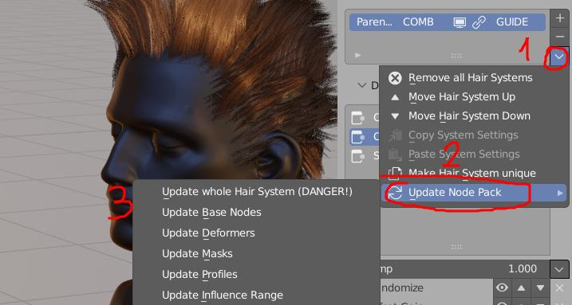

Hair System¶
Note: Available since Blender 3.0, requires Blender 3.3 or above
Overview¶
Hair System is procedural tool for hair strands generation and adjustment in non-destructive way. I made it similar to blender Particle System, but based on Geometry Nodes, and more flexible (hopefully easier to use too).
It works as stack of Systems, each of them build from its own sub-stack of strands generators and modifiers (Deformers), that you can put on top of each other and slowly build up complexity over time.
All systems can be linked together with usage of Tags
 Hair System is located in Right Sidebar → Hair Tool Tab → Hair System Panel. Click [+] to add Hair System to selected mesh/curve
Hair System is located in Right Sidebar → Hair Tool Tab → Hair System Panel. Click [+] to add Hair System to selected mesh/curve
Last but not least it can output many kinds of hair profiles, which makes it good for game hair creation.
Hair Setup¶
Creating Hair Systems¶
Hair System can be assigned to mesh or curve object (one is required, but you need both to get full functionality).
- Adding Hair system to mesh is possible, but you will have to manually pick guide object (if necessary). This setup is used in Hair Tool Baking scene.
- When Curve is selected, Hair Tool will check if surface mesh is assigned to it, and will use both. This is what you will usually want to use. If no surface mesh was detected you will be able to use limited functionality of Hair System (no child strands spawning)
To create Hair System select curve or mesh, and click [+] icon in Hair System Panel
Note: 'Old' curves cannot have any bevel depth or use profile object, or they won't work correctly as guide (Hair System will see them as mesh, not as curve)
Note: If you assigned Hair System to curve, then you won't be able to convert it to mesh. In that case use Transfer Hair System option.
Transfer Hair System¶
Transfers Hair System from Curve to Mesh or vice versa. Visually there will be/should not be any difference. Useful when you want to convert new Blender Hair Curves to mesh, to export, but you assigned Hair System to Curve (they do not support converting to mesh).
 Above Hair System was assigned to Curve ('HairCurves' obj). Transfer Hair System operator will create 'source surface' copy ('basic_scalp') and move Hair System to that copy. 'Convert To Mesh' will work now
Set As Child¶
Settings System as Child will allow you to use additional hair effects: clumping, interpolation, curls and twist.
In video above we want set second Hair System as child of first one. Tag first system as A, then, in second system, we set parent tag as: A. Finally enable parent by clicking on link icon. Interpolation, clumping and other effects can be used now
Hair Interpolation¶
To enable hair interpolation, current Hair System has to have parent - see above.
After that Toggle Interpolation button will be accessible in first deformer - Strands Generator - properties
Tags¶
You can think of Tags as labels assigned to Hair System strands. Thanks to Tags you can set child-parent relations or affect only tagged strands with deformers. Why don't we just use system name - rather than introducing new feature? The difference is you can assign multiple tags to same strand e.g.:
- System A:
LONGandCURLY. - System B:
LONG
Now you can modify LONG tag without having to repeat same operations on system A and B twice.
In addition, Tags can be assigned to subset of strands from within Hair System: you can use vertex group to select right half of hair strands and tag them as CURLY. Later you can modify only this tag or use it as parent.

Tags Used for Parenting (unlocks hair clumping, interpolation and twisting). Now 'First' Hair System can now follow GUIDE tag - assigned to separate HairCurves object
You can assign Tag in two ways:
- by typing it in next to system name see
Atag in image above. If not tag was assigned then[TAG]label is shown - by using Assign Tag Deformer
- you can also assign tags to Hair System guide objects (new Curve Hair) from Tags Panel
Parent Tag can be entered, next to the chain icon - on the very right. Enable chain icon, to set current system as child of Tagged one.
Tags Panel¶
In video above we create Tag A, then assign selected curves to tag A using Assign button
Note: Assigning Tags only works on new Hair Curves. To be able to select individual curves, like in video above, you have to use Hair Modeling mode. For now only selection works from all the available Modeling Tools
Hair Deformers¶
They allow to procedurally change chair look in non-destructive and in linear way (meaning can be stacked one after another in similar way than Blender modifiers can). Each hair deformer can be reordered and some can be influenced by previous Hair Systems if Set as Child (eg. Clump or Twist deformer)
Strands Generator / Filter¶
First slot in deformer stack, cannot be removed. Acts in binary way:
- Generator - (comb icon) will generate strands that are later affected by all subsequent deformers in stack
Strands Generator - The defalul mode. Can be Set as child
- Filter - won't generate strands. Instead, it will take in strand from all preceding Hair Systems (you can use 'Affect Tag' button to filter only subset of strands). Those filtered strands are then affected by all subsequent deformers in current stack.
Clicking on Comb icon, will switch current Strands Generator to Strands Filter. After that current deformer stack will influence only preceding Hair Systems
The idea behind Strands Filter mode is - rather than modify multiple Hair System one by one e.g. adding Set Radius or Align Tilt to each of them, one by one, you should rather tag those systems, then create new Hair System at the end of stack, set it to 'Filter' -> Affect Tag -> input Tag name that you want to influence. This way you can modify all of those strands in one place.
Note: If you want to affect only part of visible hair you can enable 'Affect Tag' option - and type int Tag of hairstrands that you want to modify.
Noise Deformer¶
Add noise distortion to strands
Curls/Waves¶
Adds curls/wavy effect to hair strands
Trim¶
It will shorten strands roots and/or tips. Best to use with randomization mask
Clumps¶
Clumps hair toward parent strands. Effect requires to set Hair System to be set as child
Twist¶
Twist effect requires to set Hair System to be set as child. For best effect is is good idea to place it after Clump deformer
Assign Tag¶
Here we assign R tag to right side of head (using vertex group). Then in following 'Scale' Hair System we can reffer to this tag using Strands Filter -> Affect Tag. This way only right side is affected (Scaled)
Note: Assigning any tag e.g. X will create negative tag 'X, for example if we create tag
RIGHTwith some strands, then tag'RIGHTwill contain opposite set of strands.
Add Tilt¶
Add tilt to hair strands. If 'Flip Probability' is 0.5 - then half strands will be rotated clockwise and half counter clockwise
Align Tilt¶
Aligns tilt to target surface (hair normal will point outside of surface)
Push Out¶
Push hair outside/inside surface. Useful for embedding hair roots into mesh surface (use inverted 'Influence Range')
Scale¶
Scale hair up or down. With trim deformer we can reduce length of hair, but Scale deformer helps to make them longer.
Snap¶
Snap hair to source surface (could be used for wet hair effect)
Slide Points¶
Give more resolution to hair root or tips (depending on 'Influence Range'), by 'sliding' points along the curves
Set Radius¶
Set Radius - for hair tapering, strand width randomization, etc
Input Masks¶
You can mask most of the hair deformers inputs with various kind of effects. Multiple masks can be added.
Note: The order matters: first top mask is evaluated then next to the bottom
To add mask click drop down menu icon on right and pick mask type
Vertex Group/Texture¶
Vertex Group/Texture: Use vertex group or texture for input masking*
Offset/Gain¶
Mask Offset Gain: Not useful by itself, but placed after another mask, it can increase the mask contrast (gain) or brightness (offset)*
Invert¶
Invert: Not useful by itself, but placed after another mask, it will invert the previous mask effect
Randomize¶
Randomize: Outputs random value for each strand.
Random value will be picked from within [x-RandRange; x+RandRange] bounds, where x - is any input value - e.g. from vertex group mask
You can disable lower/upper bound using </> buttons, thus limiting Random value range.
- Rand Range - 0 - no randomization; 1 - maximum randomization
- Variance < 0.5 outputs mostly smaller values, from within given range,
- Variance == 0.5 all random values are drawn uniformly, from within given range,
- Variance < 0.5 outputs mostly bigger values, from within given range,
- Use Parent IDs - if enabled each child strand will inherit random value from its closest parent.
Length Mask¶
- Assigns Min value to the shortest strands,
- Assigns Max value to the longest strands.
- Swapping Min and Max values will invert the effect
Procedural Mask¶
Procedural Mask: Use procedural noise texture to randomize hair look. No need for UVs
- Min, Max - bring these values closer together to get sharper noise transition,
- Scale - the bigger scale the more detailed the texture will be,
- Distort - distorts the noise,
- Offset - offset the noise sampling position
Influence Range¶
Special mask that allows to modulate influence of deformer over strand length (e.g. taper only tip of strand). 0 - no effect, 1 - maximum effect
Types of Influence range masks:
- Constant - the effect is uniform along the whole strand length
- Simple - gradually changes the influence from 0 to 100%. Influence can be flipped using invert button
- Quadratic - gives more detailed control: modulate effect independently at strand beginning, center and end
- Profile Curve - most detailed control using profile curve
Hair Profiles¶
Presentation of hair profiles available for Hair System
- No Profile - useful for new Curve Hair rendering (controlled in 'Curves' Panel in Cycles/Eevee Render Settings)
- Round Profile - used in Hair Tool baking setup
- Mesh Profile - replace hair strands with mesh (or collection of meshes) - e.g. you can instance feathers on hair
- Curve Profile - (with UV's) - any curve object can be used as custom hair profile
- Flat Profile - (with UV's) - AKA haircards,
- Circle Profile - (with UV's) - same as above, but it will generate cylinders
- Braid Profile - (with UV's) - generate procedural braids on each haircard
Braid Profile¶
In demo above you can see both curve taper and tilt is affecting the generated braids shape
- Frequency - how dense braid interlacing is
- Main Radius - overall braid size
- Profile Radius - individual strands size (relative to Main Radius)
- Braid Resolution Factor - how many points should be generated for each period on braid (higher == smoother look)
- Radius Slide - The smaller the radius of guide curve, the more dense the braid becomes. Helps to give uniform look, when guide hair tapers
Mesh Profile¶
In this case I used Collection with 3 objects, to instance them along hair strands
Mesh profile objects should point up, and theirs origin be at the bottom. Otherwise, they may not align correctly to hair strands. Their length is not normalized, meaning taller objects will be longer after placing on hair strands (you may need to match profile objects height by hand, to give them same length).
- Width - changes cross-section size of mesh when its is placed on top of curve
 Slice Mesh Profile button will cut object using custom 'slicing' modifier. This way it will conform better to hair splines - only. Button is displayed next to Profile dropdown menu '✓'
Note: Slice Mesh Profile is using boolean operation in background. It may fail on more complicated objects - e.g. when mesh has self intersections.
UV's of mesh profile objects will be preserved when instanced on top of hair. Using multiple copies of same objects with different UVs is a good way to add some randomization to hair look.
Simplify Strands¶
Simplify Strands optimizes polycount of generated hair geometry, by assigning less points to shorter strands. This can easily cut polycount in half!
Updating¶
After updating Hair Tool, there may be changes in Hair System nodes, that you may wish to transfer to your old blend file (for example update added new feature in Clump node, but your project file is using old Clump)
 You may update deformer, profile nodes and helper nodes separately using menu above.
Note: If bigger changes were deployed in new HT release, your last chance would be using 'Update Whole Hair System' - this will update all nodes, in all Hair Systems for all objects on scene. This may break the Hair System, since addon will try to recreate whole node tree structure from scratch
Limitations¶
- Only One UV box can be assigned to profile - you can use Mesh Profile with multiple meshes as a workaround for randomizing UVs
- Hair Modeling Tools do not work (except selection)
- You can't convert Hair System to mesh if it was assigned to new Hair Curve. Use Transfer Hair System as workaround